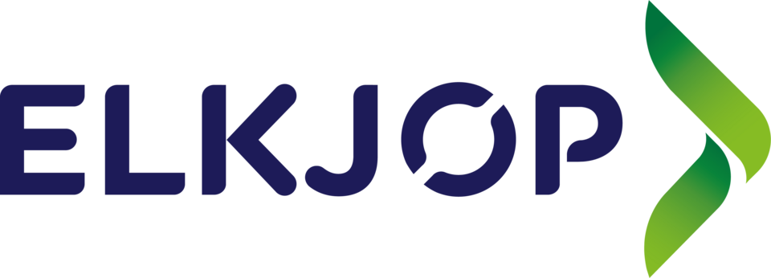

홈 > 브랜드 매거진 > Elkjøp
엘키오 Elkjøp
엘키오(Elkjøp)는 1962년 노르웨이에서 설립된 북유럽 최대의 가전·전자제품 양판점 체인이다.
산업 분야 리테일·커머스 · 공개 등급 자료 기반 · 브랜드 평가 4.1 ★

한눈에 보는 브랜드
엘셉(Elkjøp)은 1962년 3월 노르웨이에서 트뤼그베 피에틀란이 33개 소규모 전자제품 딜러를 모아 공동 구매 조직으로 출범시킨 회사다. 더 큰 물량을 더 좋은 조건에 사들이려는 상인 연합이 출발점이었고, 이후 두 번의 전환점을 거치며 체질이 바뀐다.
첫째는 1993년 오슬로 증권거래소 상장으로 자본과 공신력을 확보한 일, 둘째는 1999년 영국 Currys plc(당시 딕슨스 그룹)에 인수되어 범유럽 유통 자본의 일원이 된 일이다. 현재는 6개국에서 400여 개 매장과 약 2만 4천 명의 인력을 운영하는 노르딕 최대 전자제품 소매 체인으로 자리 잡았다.
브랜드 관점
엘셉의 핵심은 노르딕 가전·전자 소매 1위라는 단순한 순위가 아니라, 인구가 적고 디지털 침투율이 극단적으로 높은 시장에서 대형 오프라인 매장과 온라인을 하나의 흐름으로 묶어낸 옴니채널 운영 역량에 있다. 약 25% 안팎의 노르딕 권역 점유율은 2위 Power, 독일계 MediaMarkt, 온라인 강자 NetOnNet 같은 경쟁자들과의 격차를 만든 결과다.
차별점은 30분 매장 픽업, 설치·배송 서비스, 이벤트 기반 실시간 재고 시스템처럼 매장과 디지털을 끊김 없이 연결한 실행력에 있다. 최근에는 부엌·주방 가전 카테고리 급성장과 B2B 결제 현대화로 사업 폭을 넓혔다.
한국 독자에게 이 사례가 갖는 의미는 분명하다. 한국 역시 가전 양판 시장이 온·오프라인 경계 해체와 점유율 집중을 동시에 겪고 있어, 작은 내수 시장에서도 압도적 1위가 어떻게 규모의 경제와 서비스 밀도로 방어선을 구축하는지 보여주는 살아 있는 참고 모델이 된다.
시작과 성장
엘셉이 태어난 1960년대 노르웨이는 전후 소득 증가와 함께 텔레비전, 냉장고, 세탁기 같은 가전이 가정으로 빠르게 보급되던 시기였다. 그러나 개별 소매상은 대형 공급사 앞에서 협상력이 약했다.
1962년 트뤼그베 피에틀란은 33개 자영 딜러를 묶어 공동 구매 협동체를 세웠고, 회사명 '엘셉'은 노르웨이어로 전기·전자(El)의 구매(kjøp)를 뜻한다. 첫 전환점은 1993년 오슬로 증시 상장으로, 이를 발판 삼아 1990년대 내내 다른 노르딕 국가로 진출하고 스웨덴 옌셰핑에 공동 중앙 물류창고를 세워 규모 기반을 다졌다.
두 번째 전환점은 1999년 11월 영국 Currys plc의 인수다. 이로써 단일 국가 연합체에서 범유럽 유통 그룹의 핵심 지역 사업으로 격상되었다.
이후 스웨덴·덴마크의 엘기간텐, 핀란드의 기간티, 아이슬란드의 엘코 등 국가별 브랜드로 확장하며 노르딕 전역을 덮는 다브랜드 체계를 완성했다.
브랜드 아이덴티티
엘셉의 가치는 '모두가 놀라운 기술을 누리게 한다'는 접근성 지향에 뿌리를 둔다. 비주얼 아이덴티티는 2013년 노르웨이에서 새 로고와 전용 서체를 도입하며 정비되었고, 2014년 해외 자매 브랜드들도 같은 결의 디자인을 각자의 이름으로 받아들였다.
색상은 신뢰감을 주는 블루를 중심축으로 그린 계열을 보조로 쓰며, 흑백 버전으로도 일관성을 유지한다. 타깃은 첫 가전을 마련하는 신혼 가구부터 최신 기기에 민감한 얼리어답터까지 폭넓게 아우르며, 톤앤보이스는 전문 매장의 신뢰감과 친근한 안내자의 따뜻함을 함께 담아 기술 앞에서 위축되지 않도록 돕는 쪽으로 설정되어 있다.
제품과 서비스
취급 범위는 텔레비전과 오디오, 컴퓨터와 모바일, 생활·주방 대형 가전, 게이밍과 웨어러블, 소형 액세서리까지 전자제품 전반을 포괄한다. 매장 포맷은 통상 1,000~2,000제곱미터 규모의 대형 슈퍼스토어가 중심이며, 노르웨이의 엘셉 폰하우스처럼 모바일 특화 매장도 병행한다.
판매 채널은 오프라인 매장과 자사 온라인몰을 묶은 옴니채널 구조로, 클릭앤컬렉트와 30분 매장 픽업, 가정 배송 및 설치 서비스를 함께 제공한다.
현재 상태
본사는 노르웨이 오슬로에 있으며, 모회사는 영국 상장 유통 그룹 Currys plc다. 운영 국가는 노르웨이, 스웨덴, 덴마크, 핀란드, 아이슬란드, 페로 제도 등 6개국이며 그린란드에도 제휴 브랜드로 연결된다.
매출은 2020/21 회계연도에 약 498억 크로네를 기록했고, 2025/26 회계연도 상반기 매출은 약 238억 크로네로 전년 동기 대비 8.8% 늘었다. 다만 2024/25 연간 연결 총매출의 확정 수치는 미공개로 처리한다.
BI/CI 변천사
자주 묻는 질문
엘키오는 어느 나라 브랜드인가요?
엘키오는 노르웨이의 리테일·커머스 브랜드입니다.
엘키오는 언제 설립되었나요?
엘키오는 1962년 설립되었습니다.
엘키오의 브랜드 아이덴티티는 무엇인가요?
엘셉의 가치는 '모두가 놀라운 기술을 누리게 한다'는 접근성 지향에 뿌리를 둔다.
엘키오의 대표 제품은 무엇인가요?
취급 범위는 텔레비전과 오디오, 컴퓨터와 모바일, 생활·주방 대형 가전, 게이밍과 웨어러블, 소형 액세서리까지 전자제품 전반을 포괄한다.
엘키오의 본사는 어디에 있나요?
본사는 노르웨이 오슬로에 있으며, 모회사는 영국 상장 유통 그룹 Currys plc다.
엘키오의 공식 웹사이트는 어디인가요?
엘키오의 공식 웹사이트는 https://www.elkjop.no/ 입니다.
함께 읽을 브랜드
CU
CU
리테일·커머스 · 자료 기반CUCU(씨유)는 BGF리테일이 운영하는 한국 1위 편의점 체인으로, 2012년 패밀리마트에서 독자 브랜드로 전환했다.
Be
Best of the Bone
리테일·커머스 · 편집 검수Best of the BoneBest of the Bone는 2025년에 기록된 Shoppy Shop Brands 계열의 브랜드 아이덴티티 사례입니다. Universal Favourite가 아이...
Fl
Flaum
리테일·커머스 · 편집 검수FlaumFlaum는 2025년에 기록된 Shoppy Shop Brands 계열의 브랜드 아이덴티티 사례입니다. M/OTG가 아이덴티티 작업의 디자이너로 기록되어 있습니다....
Ko
Korshags
리테일·커머스 · 편집 검수KorshagsKorshags는 2025년에 기록된 Shoppy Shop Brands 계열의 브랜드 아이덴티티 사례입니다. Pond가 아이덴티티 작업의 디자이너로 기록되어 있습니다...
Ve
Veesey
리테일·커머스 · 편집 검수VeeseyVeesey는 2025년에 기록된 Shoppy Shop Brands 계열의 브랜드 아이덴티티 사례입니다. Onfire Design가 아이덴티티 작업의 디자이너로 기록...
 리테일·커머스 · 자료 기반자툰(Saturn)
리테일·커머스 · 자료 기반자툰(Saturn)자툰(Saturn)은 1961년 독일 쾰른에서 시작된 가전·전자제품 양판점 체인이다.
 리테일·커머스 · 자료 기반Van Leest
리테일·커머스 · 자료 기반Van LeestVan Leest는 네덜란드의 리테일·커머스 브랜드로, 상품 큐레이션, 가격 체계, 매장·온라인 유통, 구매 편의성이 브랜드 인식을 좌우하는 영역입니다.
Ay
Ayoh!
리테일·커머스 · 편집 검수Ayoh!Ayoh!는 2024년에 기록된 Shoppy Shop Brands 계열의 브랜드 아이덴티티 사례입니다. Center가 아이덴티티 작업의 디자이너로 기록되어 있습니다....